AI Daily · 2026-11-05 · Sources
中文 · English · Overview / 总览
- S01 Introducing Images 2.62026-11-04
- S02 Image generation guideDate not stated
- S03 Images 2.6 system card2026-11-04
- S04 API pricingDate not stated
- S05 Introducing Images 2.6 community discussionDate not stated
- S06 Wanaka Studio launch and visible maker discussion2026-11-04
- S07 Wanaka official productDate not stated
- S08 Release index: Wanaka Studio 1.02026-11-02
- S09 Meshy N1 native texturing release and evaluation2026-11-03
- S10 AI texture generator general workflowDate not stated
- S11 Floot Payments launch2026-11-04
- S12 Payments documentationDate not stated
- S13 Shipping documentationDate not stated
- S14 Floot productDate not stated
- S15 P-H3-Image launch2026-11-03
- S16 P-H3-Image Diffusers model cardDate not stated
- S17 P-H3-Image ComfyUI model cardDate not stated
- S18 MiniMax H3 Community License bundled with P-H3-ImageDate not stated
- S19 OHO SUNSHINE Introduces Alite Smart Glasses2026-11-04T17:00:00Z
- S20 Alite Smart Glasses with Open Ear Audio & AI TranslationDate not stated
- S21 BleeqUp Rover review: A clever alternative to an action camera2026-11-02
- S22 BleeqUp Rover AI Sports GlassesDate not stated
- S23 Compatible Phone Models for RoverDate not stated
- S24 BleeqUp Features Upgrade | App & FirmwareDate not stated
- S25 SereniBrain review: The rare EEG headband that does not hide the data2026-11-03
- S26 SereniBrain EEG Neurofeedback HeadbandDate not stated
- S27 How SereniBrain worksDate not stated
- S28 Privacy and Data2026-08-29
- S29 MoWorld2.0乌镇首发2026-11-04T07:34:00Z
- S30 魔芯科技发布MoWorld2.02026-11-04T06:57:00Z
- S31 MoWorld项目Date not stated
- S32 Agents act, LLMs recommend, and people browse2026-11-04
- S33 What AI Agents Do on Websites2026-10-29
- S34 Clarity Data Collection2025-12-01
- S35 Clarity Overview2026-10-06
- S36 Forrester Unveils New Integration With Slack2026-11-04
- S37 Forrester AI for SlackDate not stated
- S38 Forrester AI marketplace listingDate not stated
- S39 Docs Windows Desktop App Beta2026-11-02
- S40 Superhuman Docs desktop appDate not stated
- S41 What is changing: Coda becomes Superhuman DocsDate not stated
- S42 Superhuman Docs productDate not stated
- S43 GitHub Copilot is now available in Xcode’s coding assistant2026-11-04
- S44 XcodeDate not stated
- S45 Setting up coding intelligenceDate not stated
- S46 Xcode 27.3 beta release notesDate not stated
- S47 Visual Studio Code 1.1452026-11-04
- S48 Run and manage remote agent sessionsDate not stated
- S49 Manage agent sessionsDate not stated
- S50 Create and manage agent automationsDate not stated
- S51 Gemini CLI v0.67.02026-11-04T20:27:11Z
- S52 Bridge IDE companion into container sandboxes2026-10-21
- S53 IDE Integration at v0.67.02026-10-21
- S54 Gemini CLI CompanionDate not stated
- S55 Claude Code v2.1.3182026-11-04T00:01:03Z
- S56 Claude Agent SDK TypeScript v0.3.3182026-11-04T00:00:55Z
- S57 Mods overviewDate not stated
- S58 CLI referenceDate not stated
- S59 AuthenticationDate not stated
- S60 Strands tools v0.9.02026-11-04T17:20:16Z
- S61 Migrate from the community tools packageDate not stated
- S62 Edit2026-10-29
- S63 Sandbox2026-10-29
- S64 llama.cpp v0.9.02026-11-04T13:08:06Z
- S65 Add Nemotron 3.5 Transcribe support2026-11-03T13:27:06Z
- S66 Pocket voices without voice cloning2026-11-02T17:39:52Z
- S67 Chatterbox TTS support2026-11-03T22:47:12Z
- S68 ERNIE 5.5 Flash Base technical release2026-11-05
- S69 ERNIE 5.5 Flash Base model cardDate not stated
- S70 Model repository history2026-11-02/05
- S71 ERNIE 5.5 Flash Base Model License Agreement v1.0Date not stated
- S72 百度文心发布ERNIE5.5FlashBase2026-11-05T08:21:01Z
- S73 Kimi K3.1 Pro model cardDate not stated
- S74 Kimi K3.1 Pro main filesDate not stated
- S75 Kimi K3.1 Pro commit history2026-11-02
- S76 Introducing Kimi K3.1 Pro2026-10-23
- S77 Kimi K3.1 Pro deployment recipeDate not stated
- S78 Kimi K3.1 Pro quickstartDate not stated
- S79 Kimi K3.1-Pro License2026-11-02
- S80 月之暗面开放KimiK3.1Pro权重2026-11-04T23:34:37Z
- S81 Daybreak Red is now available in AWS GovCloud (US-East)2026-11-04
- S82 Daybreak Red from OpenAI now available to eligible customers on Amazon Bedrock in AWS GovCloud (US-East)2026-10-30
- S83 Fluidic Body — submission history2026-11-04T07:13:34Z
- S84 Fluidic Body — full paper2026-11-04T07:13:34Z
- S85 Smartphone-Aided VR Exergames for HIIT — submission history2026-11-04T16:18:35Z
- S86 Smartphone-Aided VR Exergames for HIIT — full paper2026-11-04T16:18:35Z
- S87 ROV haptic feedback study — submission history2026-11-04T15:55:47Z
- S88 ROV haptic feedback study — full paper2026-11-04T15:55:47Z
- S89 BobFlow — submission history2026-11-04T00:02:41Z
- S90 BobFlow — full paper2026-11-04T00:02:41Z
- S91 BobFlow repository and setupDate not stated
- S92 Cardiologist Annotation Tool (CAT) — submission history2026-11-04T17:07:12Z
- S93 Cardiologist Annotation Tool (CAT) — full paper2026-11-04T17:07:12Z
- S94 GPUMAP — submission history2026-11-04T09:05:00Z
- S95 GPUMAP — full paper2026-11-04T09:05:00Z
- S96 TACT — submission history2026-11-03T22:30:18Z
- S97 TACT — full paper2026-11-03T22:30:18Z
- S98 TACT replication packageDate not stated
OpenAI Images 2.6
2026-11-04 · near-three-day · Original bodies read; manufacturer statements and editorial judgments distinguished; no independent hands-on testing
S01 — https://openai.com/index/introducing-images-2-6/ · S03 — https://deploymentsafety.openai.com/chatgpt-images-2-6 · S02 — https://developers.openai.com/api/docs/guides/image-generation · S04 — https://developers.openai.com/api/docs/pricing · S05 — https://www.reddit.com/r/ChatGPT/comments/1xo3oir/introducing_images_26/
Wanaka Studio
2026-11-02 · seven-day · Original bodies read; manufacturer statements and editorial judgments distinguished; no independent hands-on testing
S07 — https://wanaka.app/ · S06 — https://www.producthunt.com/products/wanaka-studio · S08 — https://vibestack.tools/releases/
Meshy N1
2026-10-31 · seven-day · Original bodies read; manufacturer statements and editorial judgments distinguished; no independent hands-on testing
S09 — https://www.meshy.ai/blog/meshy-n1-texture · S10 — https://www.meshy.ai/features/ai-texture-generator
Floot Payments
2026-11-04 · near-three-day · Original bodies read; manufacturer statements and editorial judgments distinguished; no independent hands-on testing
S11 — https://www.producthunt.com/products/floot · S12 — https://floot.com/docs/integrations/payments · S13 — https://floot.com/docs/integrations/shipping · S14 — https://floot.com/
Pruna P-H3-Image
2026-11-03 · near-three-day · Original launch, two model cards and actual bundled LICENSE read; no model execution or independent benchmark.
S16 — https://huggingface.co/PrunaAI/P-H3-Image · S15 — https://www.pruna.ai/blog/oss-p-h3-image-launch · S17 — https://huggingface.co/PrunaAI/P-H3-Image-Comfy · S18 — https://huggingface.co/PrunaAI/P-H3-Image-Comfy/blob/main/LICENSE
OHO SUNSHINE Alite
2026-11-04 · main · Vendor-described functionality and storefront only; no independent fit/audio/translation/battery test.
S20 — https://ohosunshine.com/products/alite-ai-glasses · S19 — https://www.financialcontent.com/article/marketersmedia-2026-11-4-oho-sunshine-introduces-alite-smart-glasses-a-28g-ultra-lightweight-design-built-for-everyday-comfort
BleeqUp Rover
2026-11-02 · seven-day · One reviewer used Rover for running/cycling. Affiliate disclosure. No editor hands-on or measured safety/AI benchmark.
S22 — https://www.bleequp.com/products/bleequp-rover-ai-sports-glasses · S21 — https://gadgetsandwearables.com/2026/11/01/bleequp-rover-review/ · S24 — https://www.bleequp.com/pages/features-upgrade · S23 — https://www.bleequp.com/pages/compatible-devices
SereniBrain
2026-11-03 · near-three-day · ConsumerEEG neurofeedback, not a demonstratedAI model or medicaldevice. Reviewerhands-on, noeditoruse.
S25 — https://gadgetsandwearables.com/2026/11/03/serenibrain-review/ · S27 — https://serenibrain.com/pages/how-it-works · S26 — https://serenibrain.com/ · S28 — https://serenibrain.com/pages/privacy-and-data
MoWorld 2.0
2026-11-04 · near-three-day · Announcement material read on36Kr;datedYicairelay;olderofficialprojectforbackground. No hands-on physics, renderer or assetexporttest.
S29 — https://www.36kr.com/p/4055132476232838 · S30 — https://www.yicai.com/brief/103425442.html · S31 — https://moxin-tech.github.io/moworld/
Microsoft Clarity
2026-11-04 · near-three-day · Original vendor documentation and product page; no independent workflow test
S32 — https://clarity.microsoft.com/blog/clarity-connects-agents-llms-people/ · S33 — https://clarity.microsoft.com/blog/agentic-analytics-what-agents-do-on-websites/ · S34 — https://learn.microsoft.com/en-us/clarity/setup-and-installation/clarity-data · S35 — https://learn.microsoft.com/en-us/clarity/setup-and-installation/about-clarity
Forrester AI for Slack
2026-11-04 · near-three-day · Original vendor documentation and product page; no independent workflow test
S36 — https://investor.forrester.com/news-releases/news-release-details/forrester-unveils-new-integration-slack-its-technology · S38 — https://slack.com/marketplace/A0C2YD6HE9J-forrester-ai · S37 — https://www.forrester.com/research/ai-where-you-work/slack/
Superhuman Docs for Windows
2026-11-02 · seven-day · Original announcement and help bodies read; first five replies read; user reports not independent Windows testing
S39 — https://connect.superhuman.com/t/docs-windows-desktop-app-beta/61964 · S42 — https://superhuman.com/docs · S40 — https://help.superhuman.com/hc/en-us/articles/46875595711117-Superhuman-Docs-desktop-app · S41 — https://help.superhuman.com/hc/en-us/articles/46210093285773-What-s-changing-Coda-becomes-Superhuman-Docs
GitHub Copilot in Xcode coding assistant
2026-11-04 · near-three-day · GitHub original announcement and Apple Xcode product overview; setup and beta documentation JS bodies not fully retrieved.
S43 — https://github.blog/changelog/2026-11-04-github-copilot-is-now-available-in-xcodes-coding-assistant/ · S44 — https://developer.apple.com/xcode/
Visual Studio Code 1.145
2026-11-04 · near-three-day · Microsoft release notes and official documentation; no independent runtime evaluation.
S47 — https://code.visualstudio.com/updates/v1_145 · S48 — https://code.visualstudio.com/docs/agents/run/remote-agent-sessions · S49 — https://code.visualstudio.com/docs/agents/run/sessions/manage-sessions · S50 — https://code.visualstudio.com/docs/agents/run/automations
Gemini CLI 0.67.0
2026-11-04T20:27:11Z · main · Release metadata, merged PR and pinned version documentation; author validation only, no independent runtime test.
S51 — https://github.com/google-gemini/gemini-cli/releases/tag/v0.67.0 · S53 — https://github.com/google-gemini/gemini-cli/blob/v0.67.0/docs/ide-integration/index.md · S54 — https://marketplace.visualstudio.com/items?itemName=google.gemini-cli-vscode-ide-companion · S52 — https://github.com/google-gemini/gemini-cli/pull/29858
Claude Code 2.1.318 / Agent SDK 0.3.318
2026-11-04T00:01:03Z · near-three-day · Anthropic release notes and reference documentation; fixes not independently reproduced.
S55 — https://github.com/anthropics/claude-code/releases/tag/v2.1.318 · S56 — https://github.com/anthropics/claude-agent-sdk-typescript/releases/tag/v0.3.318 · S59 — https://code.claude.com/docs/en/authentication · S58 — https://code.claude.com/docs/en/cli-reference · S57 — https://code.claude.com/docs/en/plugins/mods/overview
Strands tools 0.9.0
2026-11-04T17:20:16Z · main · Maintainer release and migration documentation; not independently executed.
S60 — https://github.com/strands-agents/tools/releases/tag/v0.9.0 · S61 — https://strandsagents.com/docs/user-guide/migrate/strands-agents-tools/ · S62 — https://strandsagents.com/docs/user-guide/sdk/tools/vended-tools/edit/ · S63 — https://strandsagents.com/docs/user-guide/sdk/sandbox/
llama.cpp 0.9.0
2026-11-04T13:08:06Z · main · Official release and merged PR descriptions; author tests, not independent verification.
S64 — https://github.com/ggml-org/llama.cpp/releases/tag/v0.9.0 · S65 — https://github.com/ggml-org/llama.cpp/pull/31471 · S66 — https://github.com/ggml-org/llama.cpp/pull/31429 · S67 — https://github.com/ggml-org/llama.cpp/pull/30993
ERNIE 5.5 Flash Base
2026-11-03 · near-three-day · Official model card, technical blog, repository history and custom licence read; no model execution or independent benchmark reproduction.
S69 — https://huggingface.co/baidu/ERNIE-5.5-Flash-Base · S70 — https://huggingface.co/baidu/ERNIE-5.5-Flash-Base/commits/main · S68 — https://ernie.baidu.com/zh/release/ernie-5-5-flash-base/ · S71 — https://huggingface.co/baidu/ERNIE-5.5-Flash-Base/blob/main/LICENSE
Kimi K3.1 Pro weights
2026-11-02 · seven-day · Official model card, main-branch file listing and history, custom license and engine recipe read. No model execution, benchmark replication, or complete weight download.
S76 — https://www.kimi.ai/blog/kimi-k3-1-pro · S73 — https://huggingface.co/moonshotai/Kimi-K3.1-Pro · S74 — https://huggingface.co/moonshotai/Kimi-K3.1-Pro/tree/main · S77 — https://recipes.vllm.ai/moonshotai/Kimi-K3.1-Pro · S78 — https://platform.kimi.ai/docs/guide/kimi-k3-1-pro-quickstart · S75 — https://huggingface.co/moonshotai/Kimi-K3.1-Pro/commits/main · S79 — https://huggingface.co/moonshotai/Kimi-K3.1-Pro/blob/main/LICENSE · S80 — https://original.ifeng.com/c/8xnSmAvsf1e
Daybreak Red on AWS GovCloud (US-East)
2026-10-30 · seven-day · AWSOct30 andOpenAINov4originalannouncements; no authenticated provisioning/test or benchmark.
S81 — https://openai.com/index/daybreak-red-aws-govcloud/ · S82 — https://aws.amazon.com/about-aws/whats-new/2026/10/openai-daybreak-red-govcloud-east/
Fluidic Body
2026-11-04T07:13:34Z · near-three-day · Original paper; author-reported evaluation; no independent implementation test
S84 — https://arxiv.org/html/2611.06068v1 · S83 — https://arxiv.org/abs/2611.06068
Smartphone-Aided VR Exergames for HIIT
2026-11-04T16:18:35Z · main · Original paper; author-reported evaluation; no independent implementation test
S86 — https://arxiv.org/html/2611.06734v1 · S85 — https://arxiv.org/abs/2611.06734
ROV haptic feedback study
2026-11-04T15:55:47Z · main · Original paper; author-reported evaluation; no independent implementation test
S88 — https://arxiv.org/html/2611.06689v1 · S87 — https://arxiv.org/abs/2611.06689
BobFlow
2026-11-04T00:02:41Z · near-three-day · Original paper; author-reported evaluation; no independent implementation test
S90 — https://arxiv.org/html/2611.05761v1 · S89 — https://arxiv.org/abs/2611.05761
Cardiologist Annotation Tool (CAT)
2026-11-04T17:07:12Z · main · Original paper; author-reported evaluation; no independent implementation test
S93 — https://arxiv.org/html/2611.06791v1 · S92 — https://arxiv.org/abs/2611.06791
GPUMAP
2026-11-04T09:05:00Z · near-three-day · Original paper; author-reported evaluation; no independent implementation test
S95 — https://arxiv.org/html/2611.06191v1 · S94 — https://arxiv.org/abs/2611.06191
TACT
2026-11-03T22:30:18Z · near-three-day · Original paper; author-reported evaluation; no independent implementation test
S97 — https://arxiv.org/html/2611.05702v1 · S96 — https://arxiv.org/abs/2611.05702
images-26-markup-complexity
OpenAI 官方模型输出示例；非本刊生成或实测。 Official OpenAI model-output example; not generated or tested by this issue.
Source page · Original source
Vendor-supplied original product evidence; no independent reuse license confirmed
wanaka-editable-3d-studio
厂商提供的场景编辑演示图；不代表已完成独立游戏测试。 Vendor scene-editing example; no independent game test.
Source page · Original source

Wanaka / maker-supplied Product Hunt gallery.
meshy-n1-native-texturing
厂商提供的 Meshy 7／N1 同模型纹理对照；非独立评测。 Vendor Meshy 7 / N1 texture comparison on the same model; not an independent benchmark.
Source page · Original source
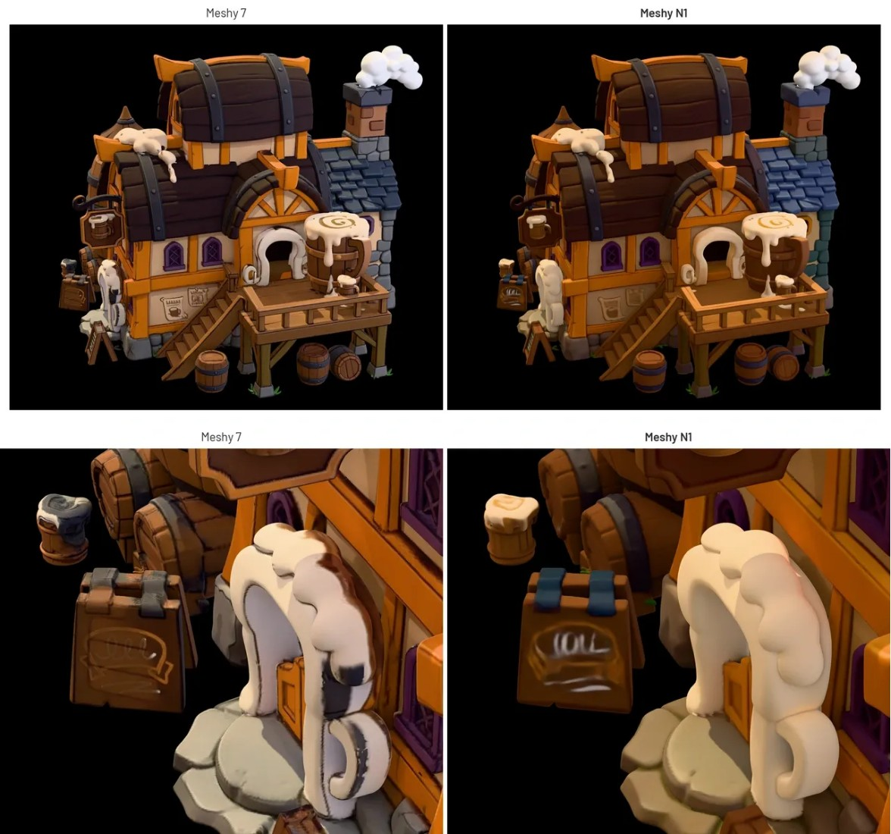
Vendor-supplied original product evidence; no independent reuse license confirmed
floot-payments-shipping
厂商沙盒结账示例，含测试卡与配送地址；非真实交易。 Vendor sandbox checkout with test card and shipping fields; not a real transaction.
Source page · Original source
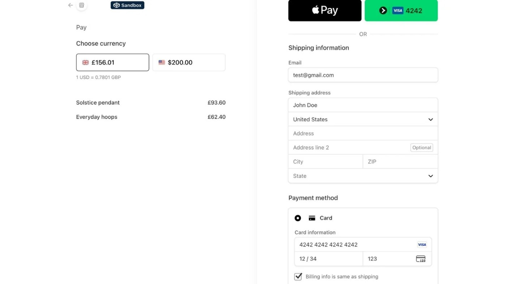
Vendor-supplied original product evidence; no independent reuse license confirmed
pruna-p-h3-image
厂商多参考图组合输出示例；非真实场景照片或独立测试。 Vendor multi-reference composition examples; generated imagery, not real scenes or an independent test.
Source page · Original source
Credit Pruna AI; vendor publication describes source portraits as public domain; resulting graphic reuse terms not independently established
oho-alite-audio-glasses
OHO SUNSHINE发布稿中的Alite产品图；厂商素材，非本刊佩戴测试。 Alite product image supplied with the OHO SUNSHINE announcement; vendor material, not our wearing test.
Source page · Original source

OHO SUNSHINE vendor press image
bleequp-rover-review
Gadgets & Wearables评测中的Rover实物；非本刊实测。 Rover hardware photographed in the Gadgets & Wearables review; not our hands-on test.
Source page · Original source
Credit Gadgets & Wearables; editorial source image; reuse assessment by publisher
serenibrain-review
SereniBrain官方会话报告示例；厂商界面图，非本刊实测。 Official SereniBrain session-report example; vendor interface image, not our test.
Source page · Original source
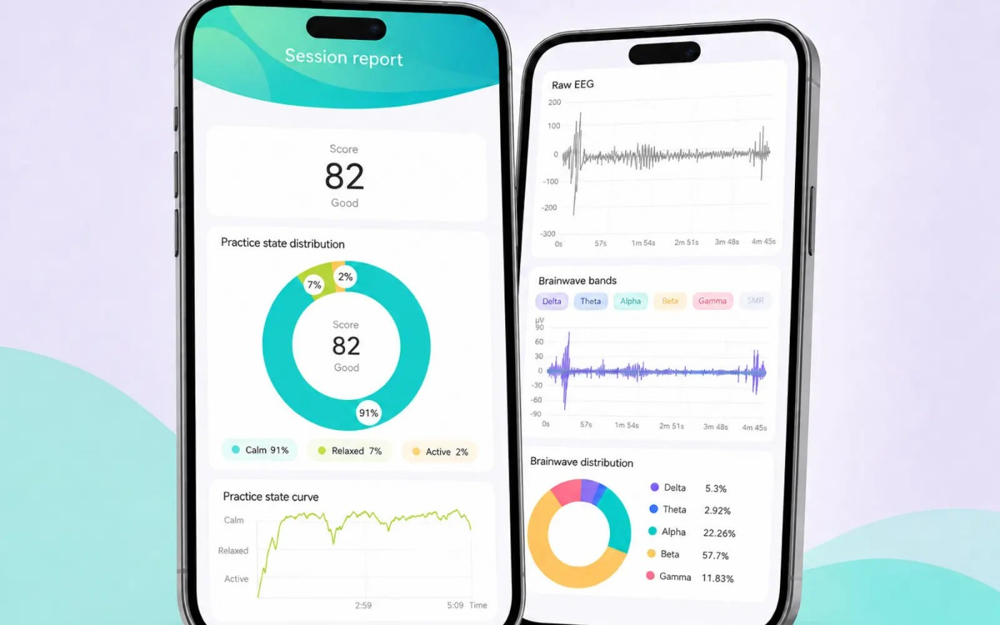
SereniBrain official product image; credit vendor
moworld-20
厂商 MoWorld 2.0 生成演示帧，含说明覆盖层；非仿真验证。 Vendor MoWorld 2.0 generated demonstration with overlays; not simulator validation.
Source page · Original source
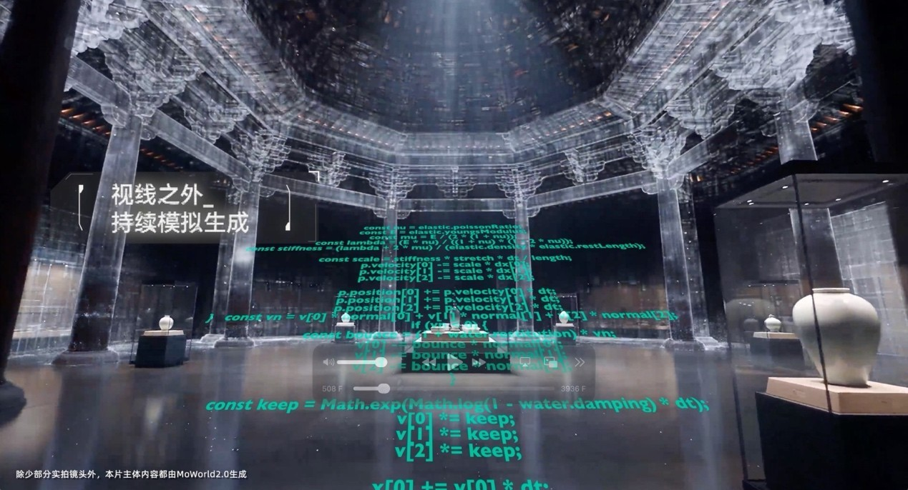
Vendor-suppliededitorialevidence;reuseconditionsunverified
clarity-agent-activity-booking
微软官方Agent Activity面板示例；非本刊实测 Microsoft’s Agent Activity dashboard example; not our hands-on test
Source page · Original source

Vendor-supplied image; credit original publisher; no independent reuse license verified
forrester-ai-slack
Forrester官方Slack界面示例；素材路径月份不是发布日期 Forrester-supplied Slack interface example; asset folder month does not date the launch
Source page · Original source
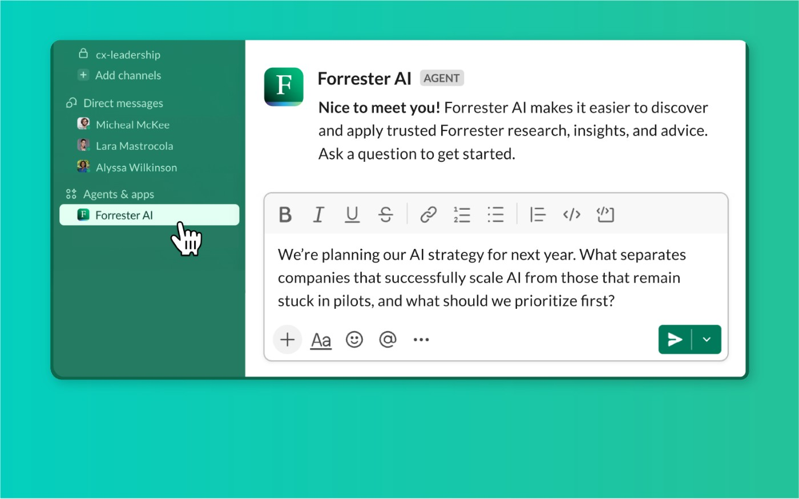
Vendor-supplied image; credit original publisher; no independent reuse license verified
superhuman-docs-windows-beta
Superhuman官方Windows测试版界面；非本刊实测 Superhuman’s Windows beta interface; not our hands-on test
Source page · Original source
Vendor community attachment; credit Superhuman; reuse license not independently confirmed
copilot-xcode-native-preview
Apple 的既有 Xcode 代理界面（画面为 Claude），非 Copilot 27.3 实测。 Existing Apple Xcode agents screen showing Claude; not a Copilot 27.3 test.
Source page · Original source

Apple official product screenshot; credit Apple.
vscode-1145-remote-review
Microsoft 发布说明中的远程浏览器界面，地址栏标明通过远程主机连接；厂商图，非本期实测。 Microsoft release-note screenshot of the remote browser, with the host connection shown in its address bar; vendor image, not our test.
Source page · Original source
Microsoft official release-note screenshot; credit Microsoft.
gemini-cli-067-container-ide
依据官方合并请求绘制的容器桥接机制：认证留在宿主，只转交工作区差异与上下文；非产品界面。 Editorial diagram based on the official PR: authentication stays on the host while workspace diffs and context cross the container bridge; not a product screenshot.
Source page · Original source
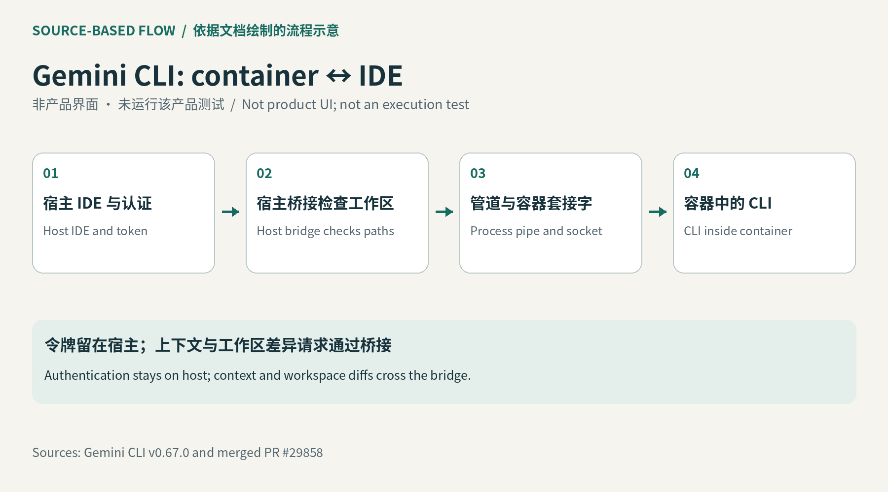
Original source-backed editorial mechanism diagram proposed.
claude-318-auth-queue-recovery
依据原始发布说明绘制的调用流程；非界面或实测。 Call-flow diagram based on original release notes; not UI or a hands-on test.
Source page · Original source

Original editorial source-backed diagram for CLI/API runtime.
strands-tools-090-migration
依据官方迁移表绘制的机制示意：旧工具包分别迁往 SDK 工具、供应商 MCP 和记忆管理；非产品界面。 Editorial mechanism diagram based on the official migration map: SDK tools, vendor MCP servers and memory management; not a product screenshot.
Source page · Original source

Original editorial diagram proposed, grounded in linked official documentation.
llamacpp-090-local-audio
依据原始发布说明绘制的调用流程；非界面或实测。 Call-flow diagram based on original release notes; not UI or a hands-on test.
Source page · Original source
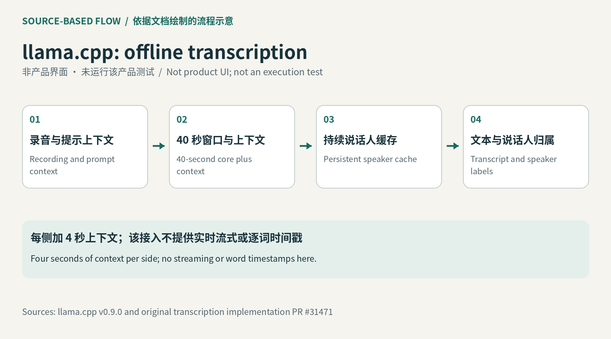
Original editorial source-backed diagram for CLI/API runtime.
ernie-55-flash-base
百度官方 ERNIE 5.5 Flash 架构图；非产品界面。 Baidu’s ERNIE 5.5 Flash architecture figure; not a product interface.
Source page · Original source

Baidu; custom model licence, no independent image licence verified
kimi-k31-pro-weights
依据官方模型卡与部署说明绘制；非界面或实测。 Diagram based on the official model card and deployment guide; not UI or a test.
Source page · Original source

Original source-backed editorial diagram.
daybreak-red-govcloud-east
依据公开文档绘制的流程示意；非产品界面，未实测。 Source-based editorial workflow diagram; not product UI or a hands-on test.
Source page · Original source
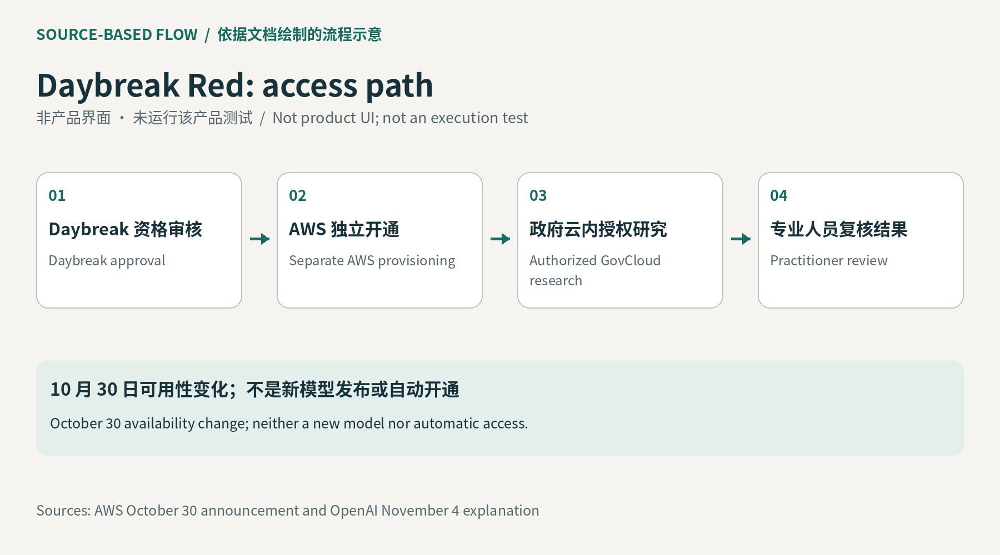
Original editorial diagram based on cited public research.
fluidic-body
作者实物原型照片：手部操作及机器人群软硬变化，含示意轮廓覆盖。 Author photograph of the physical prototype and soft/hard swarm formations, with explanatory overlays.
Source page · Original source
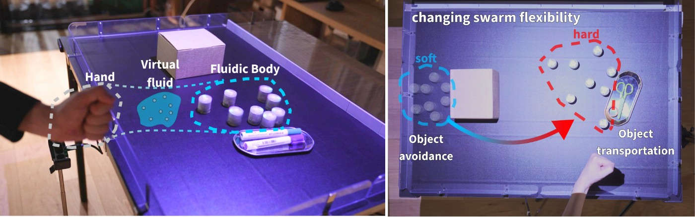
Authors; arXiv perpetual non-exclusive license, not CC BY
smartphone-vr-hiit
作者原型游戏画面：虚拟道场中的动作组合；研究演示，非已发布健身产品。 Author prototype gameplay in the virtual dojo; research demonstration, not a released fitness product.
Source page · Original source

Authors; CC BY-NC-ND 4.0
rov-haptic-cognitive-load
作者实物操作台：机器人前置画面与软触觉触板。 Author physical operator station with the robot camera view and soft haptic touchpad.
Source page · Original source
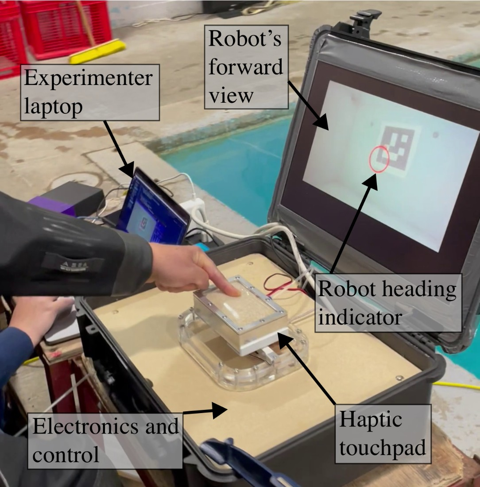
Authors; CC BY 4.0
bobflow
作者绘制的数据流、脚本与自然语言抽象对照；研究机制图，不是实测界面。 Author comparison of dataflow, script and natural-language representations; a research mechanism figure, not a hands-on screenshot.
Source page · Original source
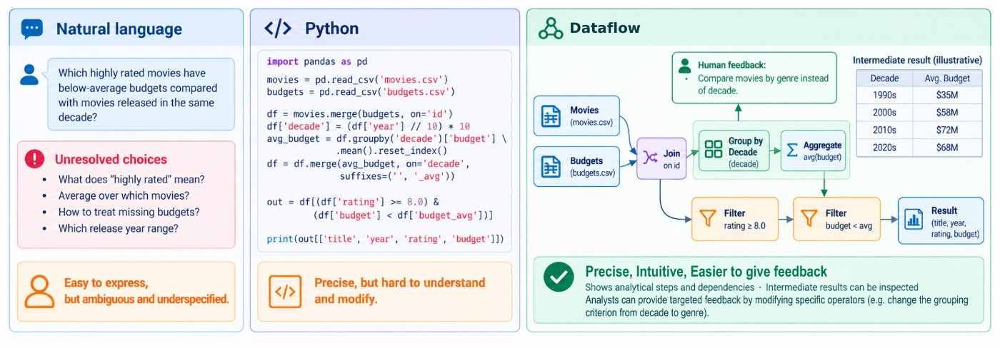
Authors; paper CC BY-NC-ND 4.0; code Apache-2.0
cat-fetal-annotation
作者的CAT标注主窗口与工作流程，影像用于说明研究界面。 Author CAT annotation window and workflow; imaging illustrates the research interface.
Source page · Original source
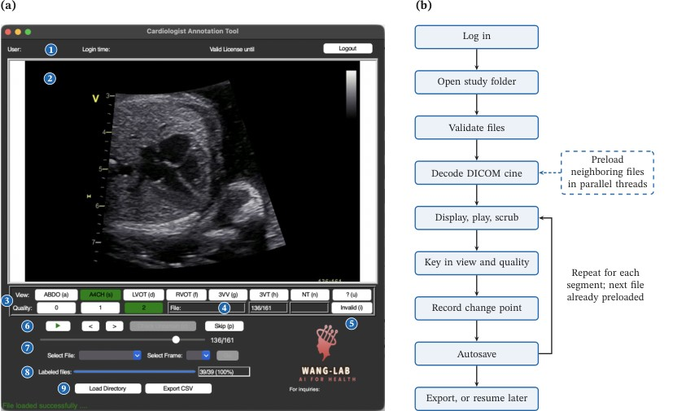
Authors; arXiv perpetual non-exclusive license, not CC BY
gpumap
作者渐进投影图：左侧尚为部分数据点，右侧为完整标准 UMAP。 Author projection snapshots: partial point counts on the left, complete standard UMAP on the right.
Source page · Original source

Authors; arXiv perpetual non-exclusive license, not CC BY
tact-qualitative-council
依据公开文档绘制的流程示意；非产品界面，未实测。 Source-based editorial workflow diagram; not product UI or a hands-on test.
Source page · Original source

Original editorial diagram based on cited public research.